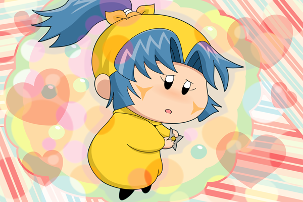

ヤマネ「ヤシチあにさま・・・。
ヤシチあにさまは今頃何をなさっているのでございましょう・・」
急にヤマネを描きたくなり、ヤシチへの思いに心揺れるヤマネを描きました。ヤマネは幼いから、ヤシチへの恋心を行動に移す仕方がわからず、いつも一人で悩み続けているのかなぁと思います。
さてこの絵、Twitterで先行公開したら「エロい」という感想がいくつか・・(^◇^;)。やましい気持ちで描いたわけでは決してありませんので(汗)←本当か？
絵の方は、いろんな色を使うように心掛けてみました。今まではこういう絵を描くときは、赤や黄色などの暖色系の色しか選ばなかったのですが、あえて青や緑を入れて見るといいアクセントになりますね。青との対比で、赤のハートが余計に際立って見えたりといろいろな発見を得られました(^^)。
(2014/5/7)